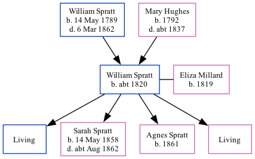

William Spratt c1820 -
[ Home ] | [ Calendar ] | [ Surnames Index ] | [ Family History ]A police man and the child of William Spratt (a laborer) and Mary Hughes, William Spratt, the three times great-uncle of Nigel Horne, was born in St Nicholas-at-Wade, Kent, England c. 18201, was baptized there on Feb 6, 1820 and married Eliza Millard (with whom he had 4 children: William Henry, Sarah Jane, Agnes H and Sarah Jane, along with 2 surviving children) in Marylebone, London, England on Jun 23, 18532.
Throughout his life, he lived at Little Chesterfield Street in Marylebone on Apr 7, 18611; and at New Chesterfield Street in Marylebone on Apr 2, 18713.
Parents
- William was born on May 14, 1789
- Mary was born in 1792
Children
- Sarah Jane was born on May 14, 1858
- Agnes H was born in 1861
Citations
- 1861 England, Wales & Scotland Census - Findmypast (was age 41 and the head of the household)
- England & Wales Marriages 1837-2005 - Findmypast
- 1871 England, Wales & Scotland Census - Findmypast (was age 51 and the head of the household)
Media
1861 England, Wales & Scotland Census - GBC-1861-0000451432
England & Wales marriages 1837-2005 - BMD/M/1853/2/HS/001081/008
England Marriages 1538-1973 - R_856334956
1871 England, Wales & Scotland Census - GBC/1871/0001252369
Family Tree
Generated by Ged2Site. Last updated on Jul 20, 2025